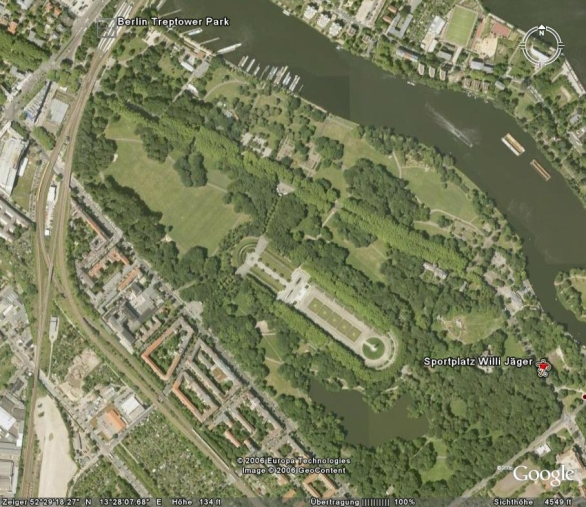

Gartendenkmal
|
|
Der Treptower Park mehr>
ist ein seht bedeutendes Gartendenkmal und eine öffentliche Grün- und Erholungsanlage. Das überwiegende öffentliche Interesse besteht in diesem Volkspark darin, dass sich hier alle erholen zu können. Es gilt das Gesetz zum Schutz, zur Pflege und zur Entwicklung der öffentlichen Grün- und Erholungsanlagen (Grünanlagengesetz) vom 24. November 1997 (GVBl. S. 612). Sondernutzungen in öffentlichen Grünanlagen bedürfen nach § 6 Grünanlagengesetz der Genehmigung des zuständigen Bezirksamts. Im Falle des Treptower Parks ist das Amt für Umwelt und Natur des Bezirks Treptow-Köpenick für die Sondernutzung zuständig. Treptow-Köpenick ist ein mit Grünflächen verwöhnter Bezirk. Auf der Liegewiese findet Sie Nutzer aus Mitte, Friedrichshain, Kreuzberg, Neukölln, Lichtenberg, - nicht aus Müggelheim und Altglienicke .... |
|
Die große Liegewiese ist
seit mehr als 100 Jahren ein
frei zugänglicher friedlicher spontaner Veranstaltungsort. An schönen Tagen treffen
wir Lesende, Spielende, Musizierende, Essende, Lernende, Träumende,
Liebende, Dikutierende, Kickende und Meditierende
ganz friedlich nebeneinander. Schön ist, wenn alt und jung Drachen steigen lassen.
keiner stört den anderen!
Nur ein Problem ärgert viele Nutzer: manche lassen ihren MÜLL einfach liegen. Wie kann man das lösen? |
|
Daten zum Treptower Park
Größe 88,2 ha Rechtsstatus Gewidmete öffentliche Grün- und Erholungsanlage, Gartendenkmal Entstehungszeit 1876-1888 Landschaftsarchitekten Gustav Meyer, Hermann Mächtig Freizeitangebote, Spazierwege, Uferpromenade, Liege- und Spielwiesen, Bootsverleih, Gastronomie, Schiffsausflüge, Sonderanlagen Rosengarten, Heidegarten, Blumengarten, Karpfenteich, Abteiinsel und kulturelle Einrichtungen wie Archenhold-Sternwarte, Sowjetisches Ehrenmal und das Figurentheater Grashüpfer im Treptower Park mehr > in den 1984 von der DDR-Regierung erbauten ehemaligen Transitshop für devisenbesitzende Berlinbesucher zog 1997 das Figurentheater Grashüpfer ein und erfreut seitdem Familien, Groß und Klein mit Puppentheater-, Bastel- und anderen Freizeitangeboten. www.theater-grashuepfer.de |
|
 |
|
Treptower Park: Die drittgrößte Parkanlage Berlins wurde von Gustav Meyer mit einem großzügigen Entwurf für die Zukunft geplant. Mit großen Freiflächen, Spielwiesen und dem Karpfenteich entsprach und entspricht er den Ansprüchen der licht- und lufthungrigen Stadtbevölkerung nach vielfältiger körperlicher Betätigung, Erholung und Vergnügen. Im Jahr 1876 wurde mit dem Bau begonnen, 1888 konnte er der Öffentlichkeit übergeben werden. Der Entwurf von Meyer, einem Schüler und Mitarbeiters Lennés stammte aus dem Jahr 1864. Novum in der zeitgenössischen Gartenarchitektur stellte das Kernstück des Parks, der ovale Spielplatz dar, umgeben von Terrassen und Böschungen, das Gelände, auf dem sich heute das Sowjetische Ehrenmal befindet. Rosengarten im Treptower Park: Der Entwurf des Landschaftsarchitekten Otto Pniower entstand in den 50er und 60er Jahren. Zunächst dominierten Sommerblumen den Garten, später entstand der heute bekannte Rosengarten mit 25.000 Rosenpflanzen, Plastiken und einem Springbrunnen. Treptower Hafen: Am modernisierten Treptower Hafen befindet sich nicht nur der Sitz der Stern und Kreis Schifffahrt GmbH, er ist auch ein beliebter Liegeplatz und Abfahrtsort für Ausflugsschiffe der größten Fahrgast-Flotte Berlins. Direkt am Treptower Park gelegen, werden saisonale Gastronomie und verschiedene Veranstanltungen, wie beispielsweise die Treptower Festtage, das Treptower Hafenfest und das über die Bezirksgrenzen hinaus bekannte Höhenfeuerwerk "Treptow in Flammen" geboten. Anschrift: Puschkinallee 12435 Berlin-Treptow Fahrverbindungen: S-Bahnhof Treptower Park, Busse 166,167,265, 104, 147, 194 |
|
Zurück zum Anfang der Seite.
Zurück zur Startseite. |